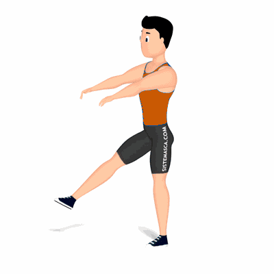

Pistol Squat

O exercício trabalha diveras partes do corpo, auxilia na definição e fortalecimento dos músculos e queimar gorduras. Estimula a coordenação motora, força e explosão. Nível avançado.
Ficha Técnica
Tipo: Funcional
Grupo Muscular: Perna
Aparelho: Nenhum
Músculos: Nenhum
Como realizar
- Na posição em pé, coluna ereta;
- Manter apenas um dos pés apoiados no chão;
- Realize o agachamento e simultaneamente mantenha a outra perna estendida sem tocar o pé ao solo, eleve-o para frente;
- Após o quadril ultrapassar a linha dos joelhos retorne à posição inicial e repita os movimentos;
- Ao término das repetições, realize novamente os movimentos alternando a posição e mantenha a outro pé suspenso.
 RC STORE
RC STORE